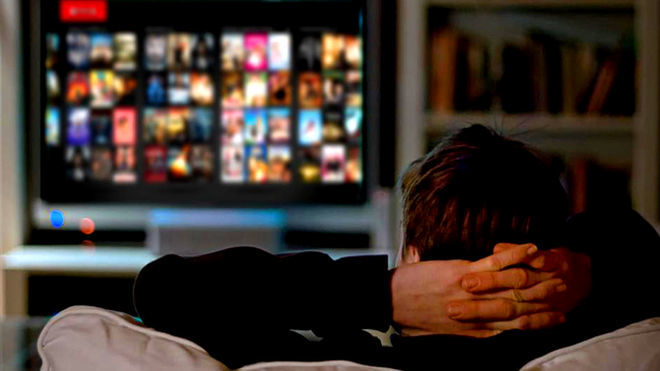
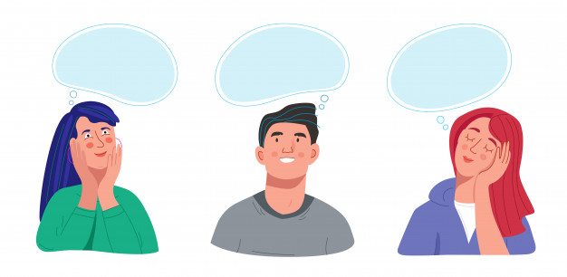

Bienvenidos a mi sitio Web sobre series.
Unos se preguntas el ¿porque de la obseción con las series?, y me he dado a la tarea de analizar el poruqe de esa pregunta y he llegado a la conclución de que igual que en los libros, las personas se meten tanto en el papel de los personajes que hasta se imaginan vivir así, tener la libertad que muestran dichos personajes.
A lo que refiero es que las personas se ven reflejadas en las series o más bien en la los personajes, cada que ven alguna serie conlleva a la gran frase "que pasaría si","que pasaria si yo tuviera eso", "que pasaria si pudriera hacer esto", entre otras cosas. Y eso explica la obseción.


Últimas Novedades
Netflix Cancela Estas Series.
Durante todo el 2019 y 2020 netflix sorprendio a todas las personas que seguian su contenido en series, cancelando varias de ellas por diferentes razónes de las más destacadas son The Society, Esta Mierda me Supera y Glow.
Leer más
La Maldición Glee.
Suicidios, muertes, adicciones, entre otras cosas le pasaron al cast de la famosa serie Glee, los fans aseguran que es una maldición, pero ¿que llego a pasar para que las personas pensaran en eso?
Leer más
Disney Anuncia Nueva Plataforma.
El pasado 3 de diciembre del 2020, sorprendio a todos anunciando su nueva plataforma que llevara el nombre de StarPlus, en ella se encontrarán todas las franquicias sacadas por dicha empresa aparte de nuevos lanzamientos.
Leer más